As we stand together on the threshold of this new chapter, we celebrate not just our individual achievements, but the journey we've shared. We've laughed, learned, and grown together, and today we mark the culmination of our hard work and dedication. We've spent countless hours studying, debating, and exploring together. We've shared our joys and sorrows, our triumphs and failures. We've formed unbreakable bonds, and we've created memories that will last a lifetime. From late-night soakings, Gists to grueling exam prep, from spontaneous adventures to quiet moments of introspection, we've experienced it all together. We're proud of each other, and we should be! We've made it through late-night study sessions, grueling exams, and endless solos from wicked friends. We've supported each other through thick and thin, and we've become more than just classmates - we've become a family. We've celebrated each other's victories and lifted each other up in times of defeat. As we go our separate ways, remember that the bonds we've formed will last a lifetime. We'll carry the memories, inside jokes, and experiences with us always. We'll look back on our time together with fondness and nostalgia, and we'll cherish the friendships we've made. Whether we're reunited in a few months or a few years, our connection will remain unbroken. So as we close this chapter and embark on new adventures, let's make a promise to each other: let's stay in touch, let's support each other's dreams, and let's continue to lift each other up. Let's be each other's sounding board, each other's safe haven, and each other's biggest cheerleaders. Let's celebrate each other's successes and offer a shoulder to cry on during tough times. We are all in this together, and we will always be graduates of THE LEGNEDARY 2K24NERS. We are a community, a network, and a family. And no matter where life takes us, we'll always have each other's backs. Whether we're chasing our dreams or facing new challenges, we'll know that we have a support system that always be there for us. As we venture forth, let's remember the lessons we've learned and the experiences we've shared. Let's hold onto the laughter, the tears, and the memories. Let's carry the spirit of our class with us, and let's make our mark on the world. Farewell, friends! May our futures be bright, and may our paths cross again soon. May we make our mark on the world, and may we always remember the incredible journey we shared together. May we stay true to ourselves and to each other, and may our bond continue to grow stronger with time. As we close this chapter, let's take a moment to reflect on the incredible journey we've shared. Let's cherish the memories, honor the struggles, and celebrate the triumphs. Let's hold onto the love, the laughter, and the lessons, and let's carry them with us as we embark on this new chapter in our lives. We did it, friends! We made it through the long nights, the early mornings, and the endless early morning grarri soaking . We made it through the struggles and the triumphs, the tears and the laughter. And as we stand here today, we know that we are stronger, wiser, and more resilient because of it.
THE LEGENDS STORIES!!!
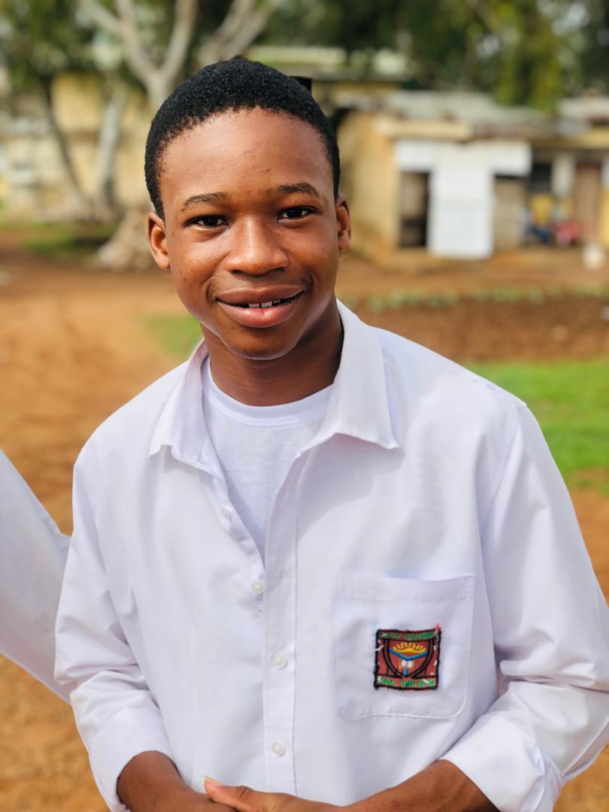
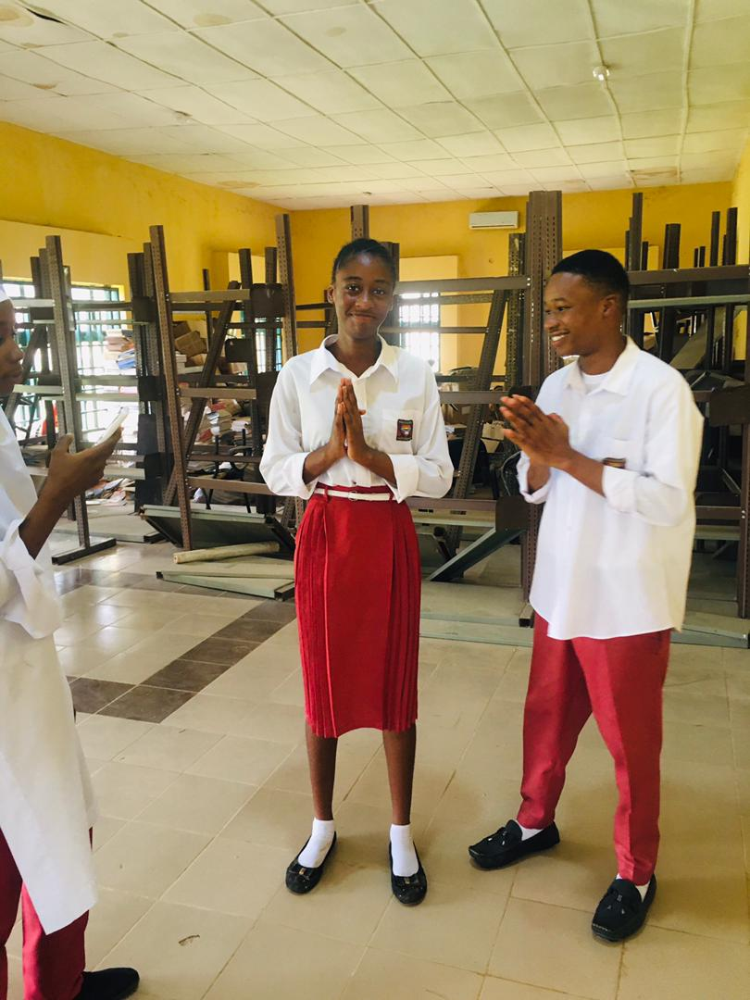
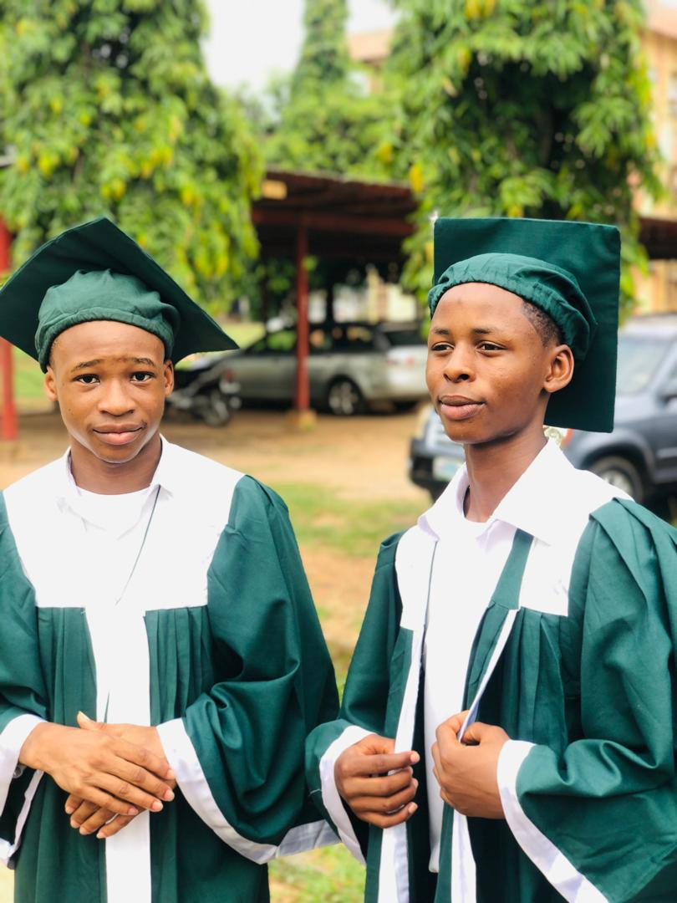
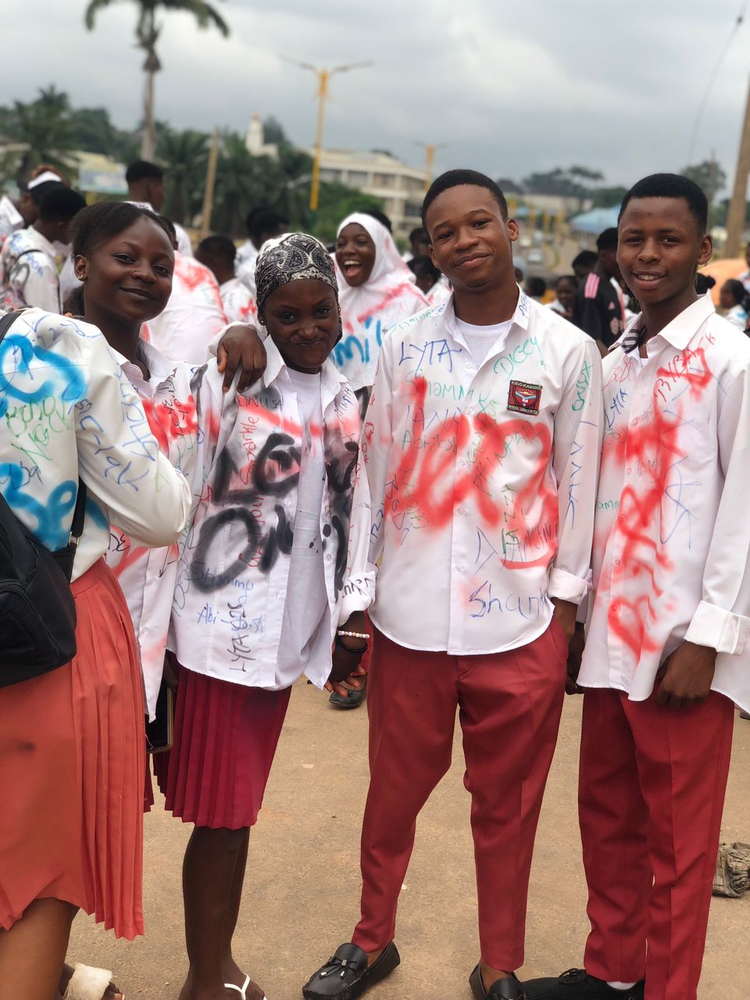


STORY OF TEXES
Ohajaka Victor Obinna, affectionately known as Texes, is a shining example of dedication, perseverance, and excellence. Throughout his secondary school journey, Texes has consistently demonstrated a remarkable work ethic and unwavering commitment to his studies. He has shown us that with determination and hard work, we can overcome any obstacle and achieve our goals. But Texes's impact goes beyond his academic achievements. He has a unique ability to make the most of every moment, turning even the most mundane situations into opportunities for growth and learning. His positive attitude and energy are contagious, inspiring those around him to strive for excellence. Texes's good works in secondary school are a testament to his character and leadership. He has been an exemplary student, always willing to lend a helping hand, offer words of encouragement, and support his peers. His kindness, empathy , and generosity have created a ripple effect of kindness throughout our school community. As we celebrate Texes's achievements, we are reminded that every moment counts , and every decision we make has the power to shape our future . Texes has shown us that by making the most of every moment, we can create a brighter future for ourselves and those around us. Let us all take a page from Texes's book and strive to make the most of every opportunity . Let us embrace his spirit of excellence, his positive attitude, and his commitment to making a difference. Congratulations, Texes, on your achievements! We are proud of you and look forward to seeing the incredible things you will accomplish in the future. Thank you!
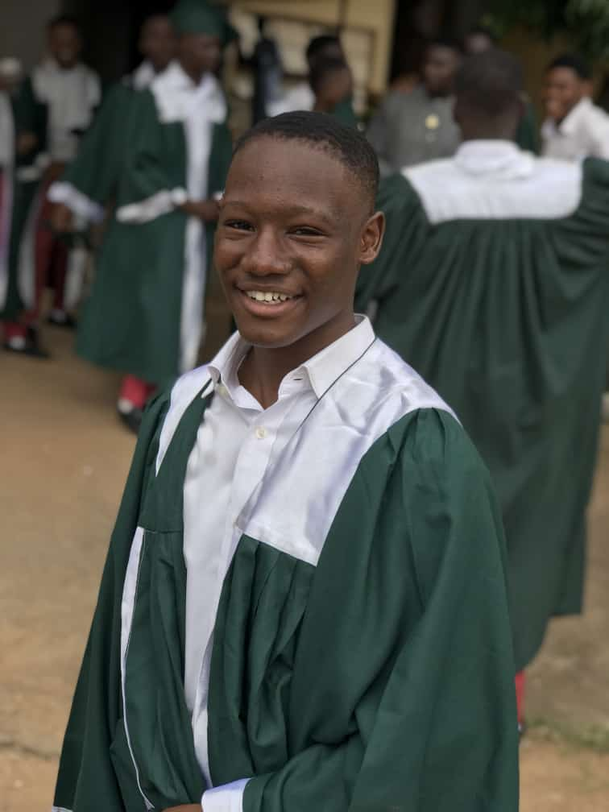
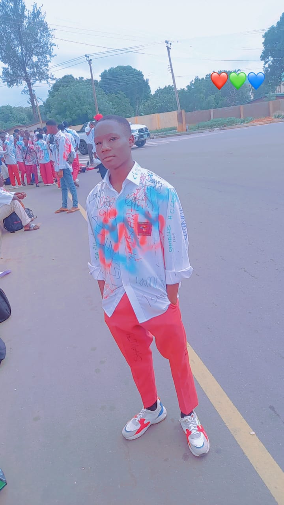
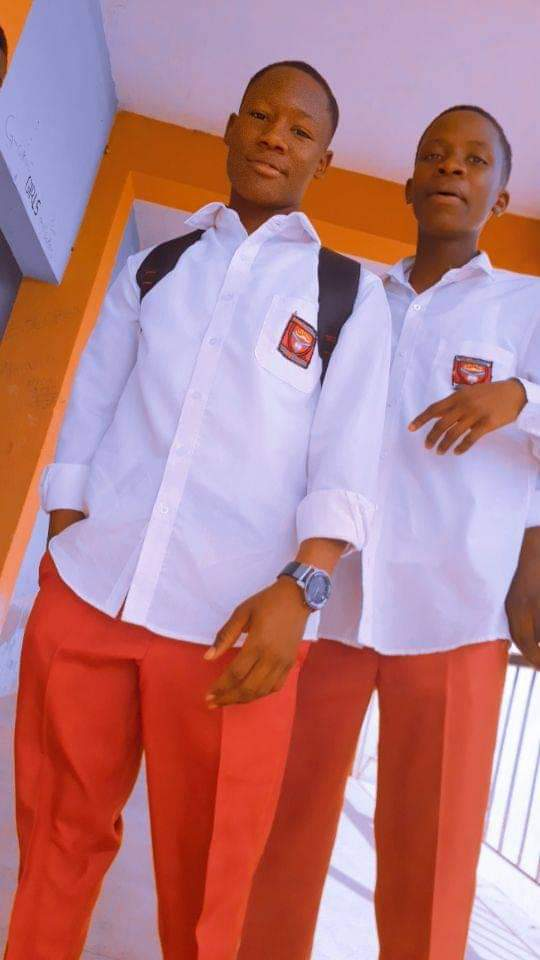
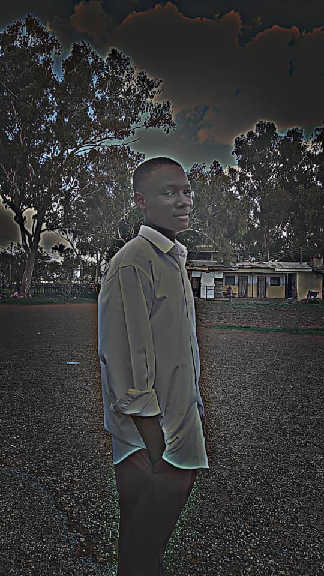
SIMZY
Simeon James Garba, affectionately known as Simzy, is a shining star who has excelled not only in academics but also in sports, leaving an indelible mark on our school. Simzy's dedication to his studies is admirable , and his commitment to excellence has earned him a reputation as a diligent and hardworking student. He has consistently demonstrated a thirst for knowledge, a love for learning, and a passion for achieving his goals. But Simzy's impact extends far beyond the classroom. On the sports field , he has proven himself to be a talented and versatile athlete, exceling in multiple disciplines . His natural ability, combined with his tireless work ethic, has made him a valuable asset to our school teams. Simzy's contributions to sports have not only brought glory to our school but have also inspired his peers to strive for excellence. He has shown us that with dedication and perseverance, we can overcome any obstacle and achieve greatness. What sets Simzy apart, however, is his exceptional character. He is a true leader, a team player, and a role model who embodies the values of fair play, sportsmanship, and respect. He has a heart of gold, always willing to support and encourage his teammates, and his positive attitude is contagious. As we celebrate Simzy's achievements, we are reminded that success is not just about individual accomplishments but also about the impact we have on others . Simzy's good works in secondary school have created a lasting legacy that will continue to inspire future generations. Let us all take a page from Simzy's book and strive to make a positive impact in our own unique ways. Let us emulate his dedication, his passion, and his commitment to excellence. Congratulations, Simzy, on your achievements! We are proud of you and look forward to seeing the incredible things you will accomplish in the future. Thank you!ENDER
Let give remarkable remarks to an extraordinary individual who brought rhythm and joy to our lives. Enoch Emmanuel AKA ENDER STICKS, our beloved drummer, friend, and confidant, left an indelible mark on our hearts. Enoch's passion for drumming was contagious. His beats had a way of moving us, of making us feel alive. He played with precision, with passion, and with a love that inspired us all. But Enoch was more than just an exceptional drummer. He was a loyal friend, a trusted confidant, and a constant source of support. To Sophia, he was more than a bestie - he was a brother, a partner in crime, and a kindred spirit. Enoch's friendship was a gift. He had a way of making us feel seen, heard, and loved. He was always there to lend a listening ear, a helping hand, or a comforting word. As we celebrate Enoch's life, let us remember his love for music, his passion for life, and his unwavering commitment to his friends. Let us strive to emulate his example, to live with purpose, and to never forget the power of friendship and community. Thank you, Enoch, for being a shining star, a rhythmic heartbeat, and a true friend. Your legacy will live on in our hearts, and your beats will continue to inspire us forever.
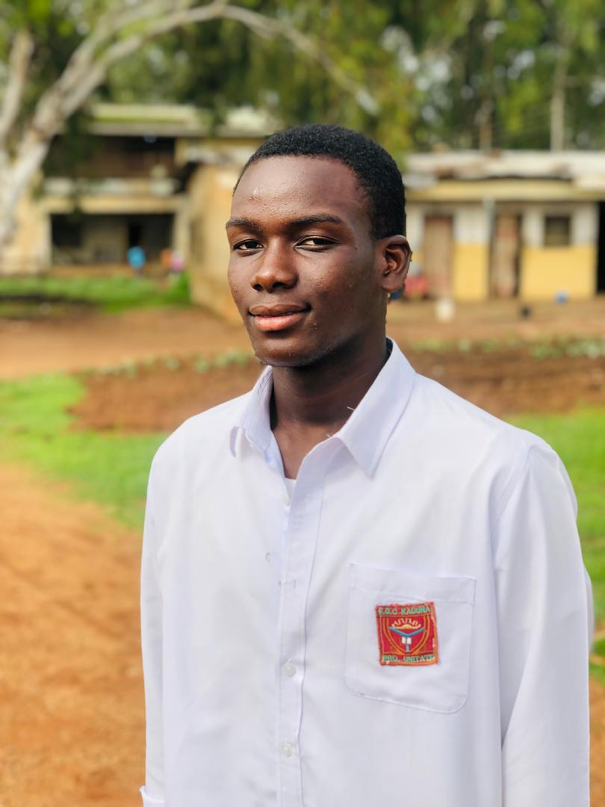
REALITY
Let not also forget an extraordinary individual,leader( HEAD BOY) who has left an indelible mark on our lives. Theophilus Caleb, affectionately known as Reality, was more than just a leader - he was a friend, a mentor( to some junior boys Sha), and a shining example of excellence. Reality's leadership was not about titles or positions; it was about inspiring others to be their best selves . He led with empathy, kindness, and a genuine passion for making a difference. His door was always open, his listening ear always available, and his guidance always insightful. As a friend, Reality was the glue that held us together. He had a unique ability to connect with each of us, to understand our struggles, and to offer a helping hand. His friendship was a gift, a treasure that we will always cherish. Reality's impact on our lives is immeasurable. He showed us that leadership is not about oneself, but about serving others. He demonstrated that true strength lies in vulnerability, empathy, and compassion. As we celebrate Reality's legacy, let us remember his wisdom, his kindness, and his unwavering commitment to making a positive impact. Let us strive to emulate his example, to lead with heart, and to never forget the power of friendship and community. Thank you, Reality, for being a beacon of hope, a shining star, and a true friend. Your legacy will live on in our hearts forever..
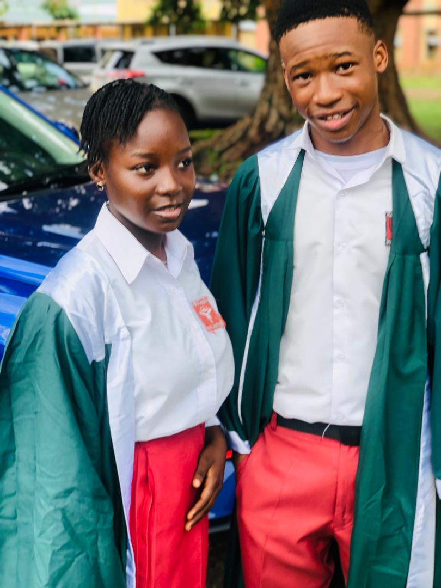
TANA
PEACE PHILIP, affectionately known as TANA OR PRESTIGE, was a force to be reckoned with - a true drama queen with a heart of gold. Tana's life was a canvas of colorful moments, filled with laughter, tears, and a dash of drama. She lived life on her own terms, unapologetically and authentically . Her flair for the dramatic was contagious, and she had a way of drawing us into her world, making us feel like we were part of her grand adventure. But beneath the drama and glamour, Tana was a loyal friend, a trusted confidante, and a kind soul. She had a way of making us feel seen, heard, and loved, even in the midst of chaos. Tana's impact on our lives is immeasurable. She taught us to embrace our own uniqueness, to live life with passion, and to never take ourselves too seriously. As we celebrate Tana's life, let us remember her zest for life, her love for drama , and her unwavering commitment to her friends. Let us strive to emulate her example, to live life with purpose, and to never forget the power of friendship and community. Thank you, Tana, for being a shining star, a drama queen extraordinaire, and a true friend . Your legacy will live on in our hearts, and your drama will continue to inspire us forever..
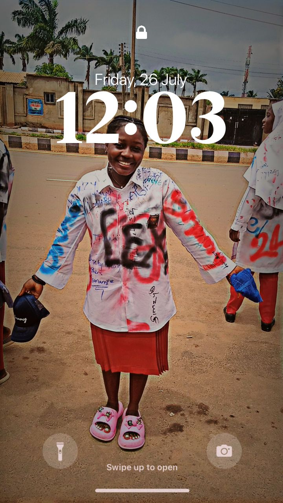
SHAMMY
GOLIS KIMBERLY, affectionately known as SHAMMY,
SAVVY
STACY DANIEL, affectionately known as SAVVY,
TAZZY
ADEYEMI OREOLUWA, affectionately known as TAZZY,
DEBBIE
WILLIAMS DEBORAH, affectionately known as DEBBIE,